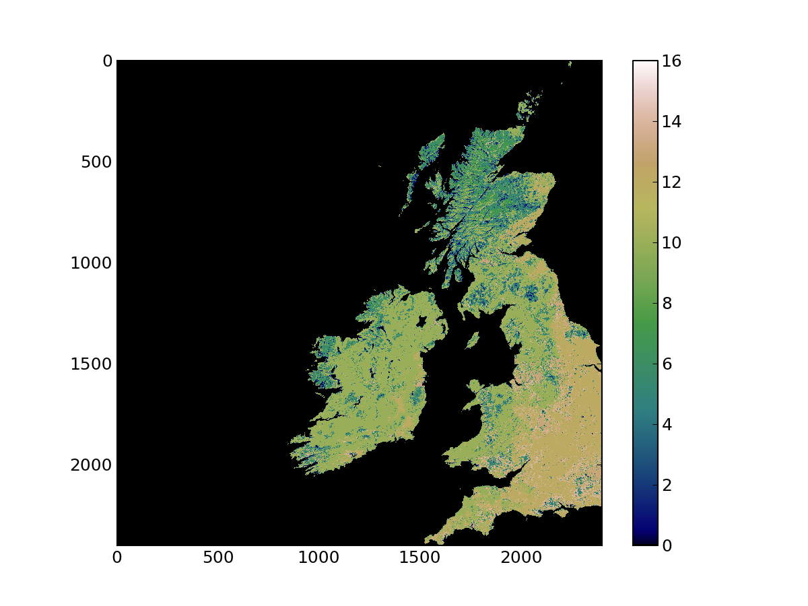
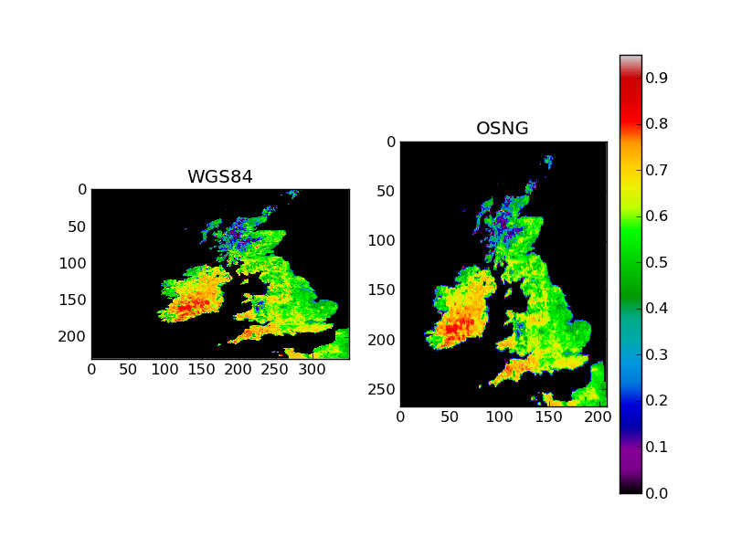

Starting to use Python to work with geospatial data¶
Start by launching in a console window the ipython interpreter. It is useful to launch ipython with the -pylab option, as this will load a number of useful modules (numpy, scipy and matplotlib), saving you the hassle of loading them yourself. The documentation for ipython is quite extensive.
$ ipython -pylab WARNING: `-pylab` flag has been deprecated. Use `--pylab` instead, or `--pylab=foo` to specify a backend. Enthought Python Distribution -- www.enthought.com Python 2.7.2 |EPD 7.1-2 (64-bit)| (default, Jul 3 2011, 15:17:51) Type "copyright", "credits" or "license" for more information. IPython 0.11 -- An enhanced Interactive Python. ? -> Introduction and overview of IPython's features. %quickref -> Quick reference. help -> Python's own help system. object? -> Details about 'object', use 'object??' for extra details. Welcome to pylab, a matplotlib-based Python environment [backend: WXAgg]. For more information, type 'help(pylab)'. In [1]:
You can try and type python commands here. However, in order to use the GDAL bindings, we need to first import the osgeo.gdal module. Also, you can check the documentation by typing help (gdal). The first thing to do is to read a file into python. We shall use a MODIS HDF file, that you can find on the system in /data/geospatial_10/ucfajlg/MOD12/MCD12Q1.A2005001.h17v03.005.2008310174635.hdf. Since HDF files have subdatasets, we’ll open the HDF file, examine the subdatasets and then load the subdataset we are interested in (to GDAL, a subdataset is a normal file, albeit one with a peculiar filename). So we create a GDAL object by using the gdal.Open function. This function requires a filename (see line[2] below). We then use the GetSubDatasets() method on the GDAL object to list the subdatasets, as well as their descriptions. Note that this is a list, where each element (each dataset) is a tuple. The first element of the tuple is the GDAL subdataset “filename”. It includes the real filename, as well as the particular subdataset. To save typing, you can store the return of GetSubDatasets() into a variable and refer to the filename for the Land_Cover_Type_5 dataset by inspecting element [4][0] of the variable where you stored the subdatasets. But for now, just load data for Land_Cover_Type_1 in a variable called lc_fich
In [1]: from osgeo import gdal In [2]: gdal_dataset = gdal.Open ("/data/geospatial_10/ucfajlg/MOD12/MCD12Q1.A2005001.h17v03.005.2008310174635.hdf") In [3]: gdal_dataset.GetSubDatasets() Out[3]: [('HDF4_EOS:EOS_GRID:"/data/geospatial_10/ucfajlg/MOD12/MCD12Q1.A2005001.h17v03.005.2008310174635.hdf":MOD12Q1:Land_Cover_Type_1', '[2400x2400] Land_Cover_Type_1 MOD12Q1 (8-bit unsigned integer)'), ('HDF4_EOS:EOS_GRID:"/data/geospatial_10/ucfajlg/MOD12/MCD12Q1.A2005001.h17v03.005.2008310174635.hdf":MOD12Q1:Land_Cover_Type_2', '[2400x2400] Land_Cover_Type_2 MOD12Q1 (8-bit unsigned integer)'), ('HDF4_EOS:EOS_GRID:"/data/geospatial_10/ucfajlg/MOD12/MCD12Q1.A2005001.h17v03.005.2008310174635.hdf":MOD12Q1:Land_Cover_Type_3', '[2400x2400] Land_Cover_Type_3 MOD12Q1 (8-bit unsigned integer)'), ('HDF4_EOS:EOS_GRID:"/data/geospatial_10/ucfajlg/MOD12/MCD12Q1.A2005001.h17v03.005.2008310174635.hdf":MOD12Q1:Land_Cover_Type_4', '[2400x2400] Land_Cover_Type_4 MOD12Q1 (8-bit unsigned integer)'), ('HDF4_EOS:EOS_GRID:"/data/geospatial_10/ucfajlg/MOD12/MCD12Q1.A2005001.h17v03.005.2008310174635.hdf":MOD12Q1:Land_Cover_Type_5', '[2400x2400] Land_Cover_Type_5 MOD12Q1 (8-bit unsigned integer)'), ('HDF4_EOS:EOS_GRID:"/data/geospatial_10/ucfajlg/MOD12/MCD12Q1.A2005001.h17v03.005.2008310174635.hdf":MOD12Q1:Land_Cover_Type_1_Assessment', '[2400x2400] Land_Cover_Type_1_Assessment MOD12Q1 (8-bit unsigned integer)'), ('HDF4_EOS:EOS_GRID:"/data/geospatial_10/ucfajlg/MOD12/MCD12Q1.A2005001.h17v03.005.2008310174635.hdf":MOD12Q1:Land_Cover_Type_2_Assessment', '[2400x2400] Land_Cover_Type_2_Assessment MOD12Q1 (8-bit unsigned integer)'), ('HDF4_EOS:EOS_GRID:"/data/geospatial_10/ucfajlg/MOD12/MCD12Q1.A2005001.h17v03.005.2008310174635.hdf":MOD12Q1:Land_Cover_Type_3_Assessment', '[2400x2400] Land_Cover_Type_3_Assessment MOD12Q1 (8-bit unsigned integer)'), ('HDF4_EOS:EOS_GRID:"/data/geospatial_10/ucfajlg/MOD12/MCD12Q1.A2005001.h17v03.005.2008310174635.hdf":MOD12Q1:Land_Cover_Type_4_Assessment', '[2400x2400] Land_Cover_Type_4_Assessment MOD12Q1 (8-bit unsigned integer)'), ('HDF4_EOS:EOS_GRID:"/data/geospatial_10/ucfajlg/MOD12/MCD12Q1.A2005001.h17v03.005.2008310174635.hdf":MOD12Q1:Land_Cover_Type_5_Assessment', '[2400x2400] Land_Cover_Type_5_Assessment MOD12Q1 (8-bit unsigned integer)'), ('HDF4_EOS:EOS_GRID:"/data/geospatial_10/ucfajlg/MOD12/MCD12Q1.A2005001.h17v03.005.2008310174635.hdf":MOD12Q1:Land_Cover_Type_QC', '[1x2400x2400] Land_Cover_Type_QC MOD12Q1 (8-bit unsigned integer)'), ('HDF4_EOS:EOS_GRID:"/data/geospatial_10/ucfajlg/MOD12/MCD12Q1.A2005001.h17v03.005.2008310174635.hdf":MOD12Q1:Land_Cover_Type_1_Secondary', '[2400x2400] Land_Cover_Type_1_Secondary MOD12Q1 (8-bit unsigned integer)'), ('HDF4_EOS:EOS_GRID:"/data/geospatial_10/ucfajlg/MOD12/MCD12Q1.A2005001.h17v03.005.2008310174635.hdf":MOD12Q1:Land_Cover_Type_1_Secondary_Percent', '[2400x2400] Land_Cover_Type_1_Secondary_Percent MOD12Q1 (8-bit unsigned integer)'), ('HDF4_EOS:EOS_GRID:"/data/geospatial_10/ucfajlg/MOD12/MCD12Q1.A2005001.h17v03.005.2008310174635.hdf":MOD12Q1:LC_Property_1', '[2400x2400] LC_Property_1 MOD12Q1 (8-bit unsigned integer)'), ('HDF4_EOS:EOS_GRID:"/data/geospatial_10/ucfajlg/MOD12/MCD12Q1.A2005001.h17v03.005.2008310174635.hdf":MOD12Q1:LC_Property_2', '[2400x2400] LC_Property_2 MOD12Q1 (8-bit unsigned integer)'), ('HDF4_EOS:EOS_GRID:"/data/geospatial_10/ucfajlg/MOD12/MCD12Q1.A2005001.h17v03.005.2008310174635.hdf":MOD12Q1:LC_Property_3', '[2400x2400] LC_Property_3 MOD12Q1 (8-bit unsigned integer)')] In [4]: lc_data = gdal.Open ( 'HDF4_EOS:EOS_GRID:"/data/geospatial_10/ucfajlg/MOD12/MCD12Q1.A2005001.h17v03.005.2008310174635.hdf":MOD12Q1:Land_Cover_Type_1' )
In ipython, you can use tab-completion or the ? symbol to explore objects. It will report methods associated with the object in question. Use this facility to list the methods available for lc_data. Some of the most important methods are
- GetGeoTransform ()
- This method returns the 6-element geotransform described in the previous section.
- GetMetadata ()
- This method returns a dictionary with the metadata items.
- GetRasterBand ( band )
- This method selects a band (and returns a pointer to it). In GDAL, band numbers start at 1, rather than 0.
- RasterCount
- The number of bands (will be one or more).
- RasterXSize
- The size in pixels of the dataset in the horizontal (x) direction
- RasterYSize
- The size in pixels of the dataset in the vertical (y) direction
- GetProjectionRef ()
- Returns the projection reference (as a WKT string)
- ReadAsArray ()
- Reads the whole dataset as a numpy array of size ( RasterCount, RasterXSize, RasterYSize ). While very convenient, be wary that some datasets are very large, and this will read all of it into memory.
- ReadRaster ()
- An efficient way of reading a chunk of the dataset.
You can use the above methods to examine the dataset. Take a minute to look at the geotransfrom, metadata, and size of the dataset. Think about the memory you will be using just to store it in memory. To actually load the data into an array, use the ReadAsArray method. Also, let’s just check the size of the dataset in Mb, and some statistics about the data
In [15]: lc = lc_data.ReadAsArray() In [16]: (lc.nbytes/(8*1024*1024.)) Out[16]: 0.6866455078125 In [20]: (lc.min(), lc.max(), lc.mean(), lc.std()) Out[20]: (0, 16, 2.2486869791666666, 4.2774078780394431) In [22]: passer = np.logical_and ( lc > 0, lc <= 16) In [23]: (lc[passer].min(), lc[passer].max(), lc[passer].mean(), lc[passer].std()) Out[23]: (1, 16, 9.4393890256958137, 2.9877779088248566)
When we exclude the ocean (landcover value of 0), and select only the pixels where the landcover is between 1 and 16 (inclusive both), we see that the mean and standard deviation of the dataset change dramatically. We are using a slice of the data from the logical array defined as passer. This provides a view of the original array: it doesn’t modify it, but only returns an array where the condition is true.
Plotting the data¶
Let’s quickly have a look at the data in lc. Since it is just an array, we can plot it directly with matplotlib:
In [29]: plt.imshow ( lc, interpolation='nearest', vmin=0, cmap=plt.cm.gist_earth) Out[29]: <matplotlib.image.AxesImage at 0xccc0650> In [30]: plt.colorbar() Out[30]: <matplotlib.colorbar.Colorbar instance at 0xcce9560>
The previous code snippet uses imshow. The first argument is the array (it has to be a 2D array), the second named argument (interpolation='nearest') tells matplotlib not to interpolate between pixels. vmin=0 gives the lowest value of the array that will be mapped to the lowest value of the colormap (in this case 0). cmap selects a matplotlib colormap. You can see what colormaps are available in this page. Finally, we add a colorbar. These commands provide the following visualisation

Finding things¶
The simplest scenario¶
The simplest scenario is to find a pixel when we know the coordinates of that pixel in the same projection as the geospatial dataset. This is farily common when working with high resolution data, usually in UTM coordinates, or when working with unprojected global datasets on a longitude/latitude grid. To find the pixel locations of coordinates, we need to use the geotransform. Assume we are interested in locating Kinder Scout, a moorland in the Peak District National Park. Its coordinates are 1.871417W, 53.384726N. In the MODIS integerised sinusoidal projection, the coordinates [1] are (-124114.3, 5936117.4). Let’s calculate what pixel location is that, and plot a callbox in our map
In [50]: geot = lc_data.GetGeoTransform() In [52]: geot Out[52]: (-1111950.519667, 463.3127165279167, 0.0, 6671703.118, \ 0.0, -463.3127165279165) In [53]: # See the nominal resolution for MODIS 0.5km data, 463 in x \ #and y. Note the -ve sign in the y as we start at the UL corner In [54]: pixel_x = (-124114.3 - geot[0])/geot[1] \ # The difference in distance between the UL corner (geot[0] \ #and point of interest. Scaled by geot[1] to get pixel number In [55]: pixel_x Out[55]: 2132.115490094644 # A real number, not an integer! In [59]: pixel_y = (5936117.4 - geot[3])/(geot[5]) # Like for pixel_x, \ #but in vertical direction. Note the different elements of geot \ #being used In [60]: pixel_y Out[60]: 1587.66572070913 # Quick check: both pixel_x and pixel_y \ # are >=0 and pixel_x <= lc_data.RasterXSize and \ # pixel_y <= lc_data.RasterYSize In [79]: plt.plot ( pixel_x, pixel_y, 'ro') # Add a red dot Out[79]: [<matplotlib.lines.Line2D at 0x1064e2d0>] In [80]: plt.annotate('Kinder Scout', xy=(pixel_x, pixel_y), \ xycoords='data', xytext=(-500, -60), \ textcoords='offset points', size=20, \ bbox=dict(boxstyle="round4,pad=.5", fc="0.8"), \ arrowprops=dict(arrowstyle="->", \ connectionstyle="angle,angleA=0,angleB=-90,rad=10", \ color='w'), ) Out[80]: <matplotlib.text.Annotation at 0x10653090>
The last line that annotates the location of Kinder Scout is quite convoluted (see documentation on annotate in here. Most of the command is taken from the examples there), but the final output is this:

Try it out on some other places¶
Find the longitude and latitude of some places of interest in the British isles (West of Greenwich!) and using the MODLAND MODIS tile calculator and the geotransform, repeat the above experiment. Note that the MODIS calculator calculates both the projected coordinates in the MODIS sinusoidal projection, as well as the pixel number, so it is a helpful way to check whether you got the right result.
Park name Longitude [deg] Latitude [deg] Dartmoor national park -3.904 50.58 New forest national park -1.595 50.86 Exmoor national park -3.651 51.14 Pembrokeshire coast national park -4.694 51.64 Brecon beacons national park -3.432 51.88 Pembrokeshire coast national park -4.79 51.99 Norfolk and suffolk broads 1.569 52.62 Snowdonia national park -3.898 52.9 Peak district national park -1.802 53.3 Yorkshire dales national park -2.157 54.23 North yorkshire moors national park -0.8855 54.37 Lake district national park -3.084 54.47 Galloway forest park -4.171 54.87 Galloway forest park -4.191 55.18 Galloway forest park -4.379 55.28 Northumberland national park -2.228 55.28 Loch lomond & the trossachs national park -4.593 56.24 Tay forest park -4.025 56.59 Cairngorms national park -3.545 57.08
Reprojecting from python¶
The most general situation is that the points of interest and the geospatial dataset have different projections. For example, GPS receivers often quote WGS84 coordinates (and so does Google maps!). We shall see how to use GDAL to project data. The basics of this require the import of the osr module, and defining two SpatialReference object, one for the source projection and one for the destination projection. In GDAL, there are many different ways of defining projections. We’ve seen the EPSG codes, but we can also use the widely availabe Proj4 format, WKT, ESRI, etc. You can use spatialreference.org to conveniently search for projections in a multitude of GDAL-useable formats. Once the projections are in place, one needs to define a CoordinateTransformation object. This object takes the two projection objects, and will have a method called TransformPoint that will transform a set of coordinates for you.
Let’s demonstrate these concepts with a script. This script first sets up the WGS84 and MODIS sinusoidal projections. It uses them to create a CoordinateTransformation object. Once this is done, it loops over the table presented above, extracts the longitude and latitude, and feeds these to the transformation method. Note that this method returns three numbers (x,y,z), as there could be a shift of height by changing the geoid or the datum.
The sample ouput (park name, longitude, latitude, MODIS x coordinate and MODIS y coordinate) is
Dartmoor national park -3.904 50.58 -275657.072566 5624245.72898
New forest national park -1.595 50.86 -111950.267741 5655380.34353
Exmoor national park -3.651 51.14 -254715.497137 5686514.95809
[...]
Some more examples¶
- Modify the script above, try convert the location of the national parks and plot them eg as a circle to the MODIS land cover image. Think about how you deal with parks that may be outside the area covered by the image.
- Try to convert the WGS84 data into a different coordinate system, and then convert these new coordinates back into WGS84.
Saving data¶
Up to now, we have covered how to read data into numpy arrays. These arrays can be used to visualise the data, or to carry further processig on them. For example, you could write a simple function to read red and near-infrarred reflectances and calculate a vegetation index [2] quite simply by
def calculate_ndvi ( red_filename, nir_filename ): """ A function to calculate the Normalised Difference Vegetation Index from red and near infrarred reflectances. The reflectance data ought to be present on two different files, specified by the varaibles `red_filename` and `nir_filename`. The file format ought to be recognised by GDAL """ from osgeo import gdal g = gdal.Open ( red_filename ) red = g.ReadAsArray() g = gdal.Open ( nir_filename ) nir = g.ReadAsArray() ndvi = ( 1.*nir - red ) / ( 1.*nir + red ) return ndvi
In the previous example, we make sure that the variables are made real numbers by multiplying them by a constant 1.0. Now, this is easy and useful, but how do you save this data so you can re-use it? As we’ve seen above, a GDAL file consists of the data, a geotransform and a projection reference. Addtionally, we need to define what output format we want. So far, we have the data (the output of calculate_ndvi). We do not have the geotransform or the spatial reference, but these can probably be gleaned from the reflectance datasets. In fact, if these are different for the red and nir bands (geolocation and projection reference), then the user should be warned of this, as it is likely that the datasets are different.
def save_raster ( output_name, raster_data, dataset, driver="GTiff" ): """ A function to save a 1-band raster using GDAL to the file indicated by ``output_name``. It requires a GDAL-accesible dataset to collect the projection and geotransform. """ # Open the reference dataset g = gdal.Open ( dataset ) # Get the Geotransform vector geo_transform = g.GetGeoTransform () x_size = g.RasterXSize # Raster xsize y_size = g.RasterYSize # Raster ysize srs = g.GetProjectionRef () # Projection # Need a driver object. By default, we use GeoTIFF driver = gdal.GetDriverByName ( driver ) dataset_out = driver.Create ( output_name, x_size, y_size, 1, \ gdal.GDT_Float32 ) dataset_out.SetGeoTransform ( geo_transform ) dataset_out.SetProjection ( srs ) dataset_out.GetRasterBand ( 1 ).WriteArray ( \ raster_data.astype(np.float32) )
So the overall program logic is to specify the red and nir files, call calculate_ndvi and then store the result using save_raster. In the UCL system, there are time series of monthly global vegetation index data from MODIS. These datasets also provide the relevant reflectance data, so that we can calculate the index, and then compare to the official product. Rather than calculat this value globally, we’ll just subset the British Isles, and operate with virtual datasets. The main problem is that the MOD13C2 product does not have a georeference or a projection, so we shall use gdal_translate to set the limits of the original dataset, and then extract the region of interest to a second VRT file:
$ gdal_translate -a_ullr -180 90 180 -90 -a_srs "EPSG:4326" -of VRT \
'HDF4_EOS:EOS_GRID:"'\
/data/geospatial_10/ucfajlg/MOD13C2/MOD13C2.A2005001.005.2007355115843.hdf\
'":MOD_Grid_monthly_CMG_VI:CMG 0.05 Deg Monthly red reflectance' \
red_2005001_global.vrt
$ gdal_translate -projwin -15 60.5 2.5 49 -of VRT red_2005001_global.vrt \
red_2005001_uk.vrt
Input file size is 7200, 3600
Computed -srcwin 3300 590 350 230 from projected window.
$ gdal_translate -a_ullr -180 90 180 -90 -a_srs "EPSG:4326" -of VRT \
'HDF4_EOS:EOS_GRID:"'\
/data/geospatial_10/ucfajlg/MOD13C2/MOD13C2.A2005001.005.2007355115843.hdf\
'":MOD_Grid_monthly_CMG_VI:CMG 0.05 Deg Monthly NIR reflectance' \
nir_2005001_global.vrt
$ gdal_translate -projwin -15 60.5 2.5 49 -of VRT red_2005001_global.vrt \
nir_2005001_uk.vrt
Input file size is 7200, 3600
Computed -srcwin 3300 590 350 230 from projected window.
We now have two files, nir_2005001_uk.vrt and red_2005001_uk.vrt. We can just put the two functions above in a file and use them
if __name__ == "__main__": red_filename = "red_2005001_uk.vrt" nir_filename = "nir_2005001_uk.vrt" ndvi = calculate_ndvi ( red_filename, nir_filename ) save_raster ( "./ndvi.tif", ndvi, red_filename ) # Data is now produced and saved. We can try to open the file and read it g = gdal.Open ( "ndvi.tif" ) # Use the geotransform to geo_t = g.GetGeoTransform() print "Raster extends from\n\t Lon: %f to %f" % ( geo_t[0], geo_t[0] + \ geo_t[1]*g.RasterXSize ) print "\t Lat: %f to %f" % ( geo_t[3], geo_t[3] + \ geo_t[5]*g.RasterYSize ) data = g.ReadAsArray () cmap = plt.cm.spectral cmap.set_over ( 'w' ) cmap.set_bad ( 'k' ) cmap.set_under ( 'k' ) plt.subplot( 1,2,1 ) plt.imshow ( data, interpolation='nearest', vmin=0, vmax=0.95, cmap=cmap)
Reprojecting and resampling data¶
The previous section demonstrated how to save raster data. However, in many cases, there’s a need to reproject and resample this data. A pragmtic solution would use gdalwarp <http://www.gdal.org/gdalwarp.html>’_ and do this on the shell. On the one hand, this is convenient, but sometimes, you need to perform this task as a intermediate step, and creating and deleting files is tedious and error-prone. Ideally, you would have a python function that would perform the projection for you. GDAL allows this by defining *in-memory raster files*. These are normal GDAL datasets, but that don’t exist on the filesystem, only in the computer’s memory. They are a convenient “scratchpad” for quick intermediate calculations. GDAL also makes available a function, ``gdal.ReprojectImage` that exposes most of the abilities of gdalwarp. We shall combine these two tricks to carry out the reprojection.
The main complication comes from the need of gdal.ReprojectImage to operate on GDAL datasets. In the previous section, we saved the NDVI data to a GeoTIFF file, so this gives us a starting dataset. We still need to create the output dataset. This means that we need to define the geotransform and size of the output dataset before the projection is made. This entails gathering information on the extent of the original dataset, projecting it to the destination projection, and calculating the number of pixels and geotransform parameters from there. This is a (heavily commented) function that performs just that task:
def reproject_dataset ( dataset, \ pixel_spacing=5000., epsg_from=4326, epsg_to=27700 ): """ A sample function to reproject and resample a GDAL dataset from within Python. The idea here is to reproject from one system to another, as well as to change the pixel size. The procedure is slightly long-winded, but goes like this: 1. Set up the two Spatial Reference systems. 2. Open the original dataset, and get the geotransform 3. Calculate bounds of new geotransform by projecting the UL corners 4. Calculate the number of pixels with the new projection & spacing 5. Create an in-memory raster dataset 6. Perform the projection """ # Define the UK OSNG, see <http://spatialreference.org/ref/epsg/27700/> osng = osr.SpatialReference () osng.ImportFromEPSG ( epsg_to ) wgs84 = osr.SpatialReference () wgs84.ImportFromEPSG ( epsg_from ) tx = osr.CoordinateTransformation ( wgs84, osng ) # Up to here, all the projection have been defined, as well as a # transformation from the from to the to :) # We now open the dataset g = gdal.Open ( dataset ) # Get the Geotransform vector geo_t = g.GetGeoTransform () x_size = g.RasterXSize # Raster xsize y_size = g.RasterYSize # Raster ysize # Work out the boundaries of the new dataset in the target projection (ulx, uly, ulz ) = tx.TransformPoint( geo_t[0], geo_t[3]) (lrx, lry, lrz ) = tx.TransformPoint( geo_t[0] + geo_t[1]*x_size, \ geo_t[3] + geo_t[5]*y_size ) # See how using 27700 and WGS84 introduces a z-value! # Now, we create an in-memory raster mem_drv = gdal.GetDriverByName( 'MEM' ) # The size of the raster is given the new projection and pixel spacing # Using the values we calculated above. Also, setting it to store one band # and to use Float32 data type. dest = mem_drv.Create('', int((lrx - ulx)/pixel_spacing), \ int((uly - lry)/pixel_spacing), 1, gdal.GDT_Float32) # Calculate the new geotransform new_geo = ( ulx, pixel_spacing, geo_t[2], \ uly, geo_t[4], -pixel_spacing ) # Set the geotransform dest.SetGeoTransform( new_geo ) dest.SetProjection ( osng.ExportToWkt() ) # Perform the projection/resampling res = gdal.ReprojectImage( g, dest, \ wgs84.ExportToWkt(), osng.ExportToWkt(), \ gdal.GRA_Bilinear ) return dest
The function returns a GDAL in-memory file object, where you can ReadAsArray etc. As it stands, reproject_dataset does not write to disk. However, we can save the in-memory raster to any format supported by GDAL very conveniently by making a copy of the dataset. This literally takes two lines of code.
We expand the main part of the program to (i) save the result of the reprojection as a GeoTIFF file, (ii) read the resulting datafile and (iii) plot it:
plt.title("WGS84") plt.subplot( 1,2,2 ) # Now, reproject and resample the NDVI dataset reprojected_dataset = reproject_dataset ( "ndvi.tif" ) # This is a GDAL object. We can read it reprojected_data = reprojected_dataset.ReadAsArray () # Let's save it as a GeoTIFF. driver = gdal.GetDriverByName ( "GTiff" ) dst_ds = driver.CreateCopy( "./ndvi_osng.tif", reprojected_dataset, 0 ) dst_ds = None # Flush the dataset to disk # Data is now saved. We can try to open the file and read it g = gdal.Open ( "ndvi_osng.tif" ) # Use the geotransform to geo_t = g.GetGeoTransform() print "Raster extends from\n\t Lon: %f to %f" % ( geo_t[0], geo_t[0] + \ geo_t[1]*g.RasterXSize ) print "\t Lat: %f to %f" % ( geo_t[3], geo_t[3] + \ geo_t[5]*g.RasterYSize ) data = g.ReadAsArray () cmap = plt.cm.spectral cmap.set_over ( 'w' ) cmap.set_bad ( 'k' )
The result of running the whole script is

Footnotes
| [1] | Can you use gdaltransform to obtain the projected coordinates? Hint: the EPSG code for WGS84 Long/Lat is 4326, and you can specify the MODIS projection using the following string "+proj=sinu +R=6371007.181 +nadgrids=@null +wktext" instead of the EPSG: XXXX code. |
| [2] | A vegetation index, such as the widely used NDVI is a transformation of bands that is broadly related to vegetation amount. |